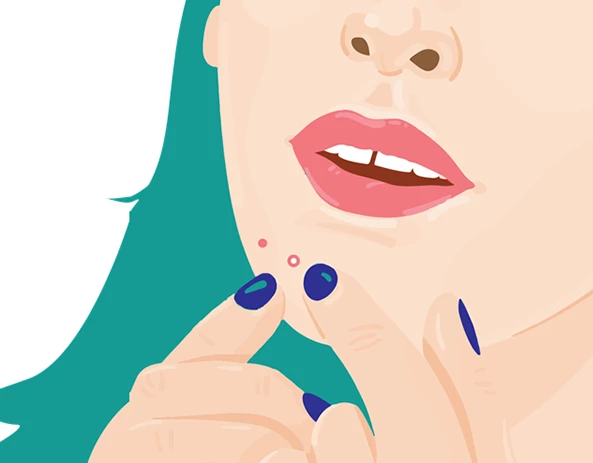

Research All research
- Endo-MASSMulti-signal acquisition system for non-invasive assessment of endothelial function. Best Paper Award, IEEE ICIIS 2023.
- Mass spectrometry with deep learningCompound identification and quantification; oral and poster presentations at ASMS 2024.
- Real-time 3D reconstructionFactory-floor safety research at CSIRO Data61, Brisbane.
Design All projects



Notes Archive
- Some useful Linux commandsA quick reference of the less common ones.
- Setting up a web server in an EC2MongoDB, Node, nginx and pm2 on one machine.
- Talks & decksPulse oximeters, ideation, biomedical innovation, graphic design.

About the author
Read the profile
Pulasthi Ekanayake is a biomedical engineer working on biosignals, diagnostics and the models that read them, and an occasional designer.